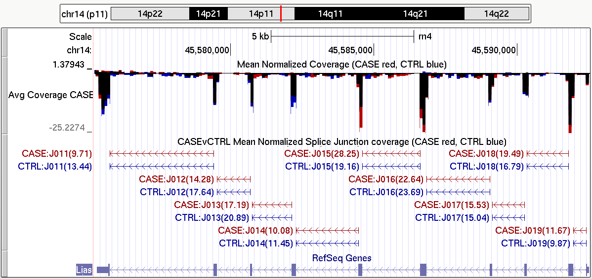

Next: Bibliography Up: QoRTs Package User Manual Previous: Identifying Problems Contents
Subsections
- Generating a flattened annotation file
- Merging Count Data
- Generating genome browser tracks
- Generating wiggle tracks
- Merging wiggle tracks
- Generating splice-junction tracks
- Merging splice-junction tracks
- Orphaned/Ambiguous junction tracks
- Importing data into other tools
Secondary Utilities
In addition to the standard quality-control tools described in the previous sections, QoRTs also includes a number of other minor utilities intended to assist in data visualization, cleaning, and preparation for downstream analyses.
Generating a flattened annotation file
Before counting exons and splice junctions, QoRTs generates a set of non-overlapping exonic fragments out of all the exons in the genome annotation gtf file. It then assigns each exonic fragment a unique identifier. Similarly, it assigns every splice junction its own unique identifier. A gtf file listing all these genomic features and their unique identifiers can be created using the following command:
java -jar /path/to/jarfile/QoRTs.jar makeFlatGff \
input.gtf \
flattened.gff
Both the input and output annotation files can be either .zip or .gz compressed. Compression is autodetected from the file extension.
strandedness: You must use the --stranded option to create the flattened gff for use with stranded datasets. DO NOT mix stranded flattened gff with unstranded data, or vice versa.
DEXSeq: DEXSeq also requires a flattened annotation file, which is formatted similarly. In order to produce a flattened gff file that DEXSeq can read, include the --DEXSeqFmt option.
This gtf file conforms to the UCSC gff file definition, (found here: http://genome.ucsc.edu/FAQ/FAQformat.html). It will contain 4 different feature types (column 3): "aggregate_gene", "exonic_part", "splice_site", and "novel_splice_site".
Merging Count Data
For the purposes of quality control it is generally preferable to run QoRTs on each sample-run individually, so that potential technical artifacts related to sequencing run or lane can be identified. However, for most downstream purposes these "technical replicates" will be combined and treated as a single sample. Differential expression tools like DESeq, DESeq2[2], DEXSeq[5], and EdgeR[9] assume that each set of gene counts (or exon counts, for DEXSeq) is derived from a different biological sample.
Thus, the java utility includes a function for quickly and easily calculating merged sample-wise counts:
java -jar /path/to/jarfile/QoRTs.jar mergeAllCounts \
decoder.txt \
/path/to/qc/results/dir/ \
./merged/
This decoder MUST contain the unique.ID and sample.ID columns.
Alternatively, the merger can be performed for a single sample directly, via the command:
java -jar /path/to/jarfile/QoRTs.jar mergeCounts
./SAMP1_RG1/,./SAMP1_RG2/,./SAMP1_RG3/
./merged/SAMP1/
The list of QC data directories must be separated by commas and contain no whitespace.
More information and a full accounting of all parameters and options can be found in the online documentation7, or by using the commands:
java -jar /path/to/jarfile/QoRTs.jar mergeAllCounts--man and java -jar /path/to/jarfile/QoRTs.jar mergeCounts --man
Generating genome browser tracks
In addition to the standard QC plots, which examine the data as a whole, it is sometimes desirable to be able to query and examine coverage information at specific genetic loci. In particular, when identifying candidate genes via genome-wide analyses, it is often vital to examine the locus for artifacts before carrying out costly and time-consuming validation experiments.
Figure 36 is just one example of the tracks that can be produced with QoRTs. A full description of how this particular splice junction track can be generated can be found in the example dataset walkthrough, which is linked to on the QoRTs github site.
{kind=link}
|

|
Generating wiggle tracks
QoRTs includes a utility to generate ".wig", or "wiggle plot" files. These wiggle plot files include counts for the mean coverage for each equal-sized window across the whole genome. These files are designed to be used with the UCSC browser or similar interfaces, and allow easy and intuitive visualization of your data.
java -jar /path/to/jarfile/QoRTs.jar bamToWiggle
infile.bam
trackName
chromLengthFile
outfilePrefix
The chromLengthFile is a simple tab-delimited text file that includes each chromosome in the first column and the chromosome's length (in base-pairs) in the second column. If the wiggle file is intended for use with a standard genome on the UCSC genome browser, then the UCSC utility fetchChromSizes should be used to generate this file. (see http://genome.ucsc.edu/goldenPath/help/bigWig.html for more information on fetchChromSizes, as well as information on how to compress your wig files into smaller and more efficient bigWig files). It also takes
Common options and flags for this function include:
- -sizefactor 1.0
- : A float value. All the coverage values will be divided by this factor. Useful for comparing two samples that may have different normalization factors.
- -stranded
- : Flag to indicate that data should be treated as stranded.
- -fr_secondStrand
- : Flag to indicate that the data is of the fr_secondstrand stranded library type. (See section 7 for more information on the two stranded library types).
- -negativeReverseStrand
- : If this flag is set, then the negative strand will be counted in negative numbers. This can be useful for plotting both strands in a single multiwig track, via a trackhub. (see http://genome.ucsc.edu/goldenPath/help/trackDb/trackDbDoc.html)
- -simpleCountByRead
- : If this flag is raised, then each read of each read-pair will be counted separately. Thus the wiggle plot will count simple read coverage depth rather than read-pair coverage depth. This means that when read-pairs overlap they will be counted twice over the overlapping region. This option will have no effect on single-ended data.
--singleEnded, --nameSorted, etc.
More information and a full accounting of all parameters and options can be found in the online documentation8, or by using the command:
java -jar /path/to/jarfile/QoRTs.jar bamToWiggle --man
Merging wiggle tracks
QoRTs includes a utility for summing or averaging multiple wiggle files, either with or without normalization factors. For example, to calculate the normalized mean coverage for each 100-bp window across all CASE samples in the example dataset:
java -jar /path/to/jarfile/QoRTs.jar mergeWig \
--calcMean \
--filenames outputData/countTables/SAMP1/QC.wiggle.fwd.wig.gz,output\
Data/countTables/SAMP2/QC.wiggle.fwd.wig.gz,outputData/countTables/SAMP3/QC.wiggle.f\
wd.wig.gz \
--sizeFactors 1.057995,0.999932,1.015372 \
path/to/output/CASE.fwd.wig.gz
There are a number of other alternative parameterizations. The --sampleList parameter (which can be either a comma-delimited list or a ".txt" file containing a list) can be used along with the --infilePrefix and --infileSuffix to specify the file names if all of the wiggle files are in the same parent directory. The size factors can also be provided in a tab-delimited file using the --sizeFactorFile parameter. If the --sizeFactors and --sizeFactorFile parameters are omitted then the non-normalized sums/means will be calculated.
For example, the following command will produce the exact same results as the previous command:
java -jar /path/to/jarfile/QoRTs.jar mergeWig \
--calcMean \
--infilePrefix outputData/countTables/ \
--infileSuffix /QC.wiggle.fwd.wig.gz \
--sampleList SAMP1,SAMP2,SAMP3 \
--sizeFactorFile outputData/size.factors.txt \
path/to/output/CASE.fwd.wig.gz
(Note that this uses the size factor file generated in Section 8.4.27)
Common options and flags for this function include:
- -calcMean
- : If this flag is raised, the utility will calculate the average rather than the total coverage for each window.
- -makeNegative
- : If this flag is raised, all output values will be multiplied by -1.
- -sizeFactorFile
- : A file containing at least two columns, the sample.ID and the size.factor. This file must include all samples in the sample list, but can include other samples that are not included in the sample list.
More information and a full accounting of all parameters and options can be found in the online documentation9, or by using the command:
java -jar /path/to/jarfile/QoRTs.jar mergeWig --man
Generating splice-junction tracks
To visualize splice junction data, QoRTs can produce bed files that show splice junction counts:
java -jar /path/to/jarfile/QoRTs.jar makeJunctionTrack \
--stranded \
--filenames outputData/countTables/SAMP1/QC.spliceJunctionAndExonCou\
nts.withNovel.forJunctionSeq.txt.gz \
flattened.gff \
path/to/output/CASE.bed.gz
Common options and flags for this function include:
- -rgb r,g,b
- : The color to use for each bed entry. Three integers, comma-delimited (with no spaces), each between 0 and 255.
- -stranded
- : Whether the data is stranded.
- -sizeFactors sf1,sf2,...
- : A list of size factors with which to normalize replicates to a common scale. The list must have the same length as the number of replicates provided (ie the filenames parameter).
- -skipNovelJunctions
- : If this option is used, novel splice junctions will not be included in the output file.
- -title
- : A prefix to append to each splice junction ID.
More information and a full accounting of all parameters and options can be found in the online documentation10, or by using the command:
java -jar /path/to/jarfile/QoRTs.jar makeJunctionTrack --man
Merging splice-junction tracks
Merged splice junction tracks can be created using the same utility used to create single-sample splice junction tracks. This uses syntax similar to the syntax used for merging wiggle files:
java -jar /path/to/jarfile/QoRTs.jar makeJunctionTrack \
--calcMean \
--stranded \
--filenames outputData/countTables/SAMP1/QC.spliceJunctionAndExonCo\
unts.withNovel.forJunctionSeq.txt.gz,outputData/countTables/SAMP2/QC.spliceJunctionA\
ndExonCounts.withNovel.forJunctionSeq.txt.gz,outputData/countTables/SAMP3/QC.spliceJ\
unctionAndExonCounts.withNovel.forJunctionSeq.txt.gz \
--sizeFactors 1.057995,0.999932,1.015372 \
flattened.gff \
path/to/output/CASE.bed.gz
As with the wiggle-file merge utility, there are a number of other alternative parameterizations. The --sampleList parameter (which can be either a comma-delimited list or a ".txt" file containing a list) can be used along with the --infilePrefix and --infileSuffix to specify the file names if all of the wiggle files are in the same parent directory. The size factors can also be provided in a tab-delimited file using the --sizeFactorFile parameter. If the --sizeFactors and --sizeFactorFile parameters are omitted then the non-normalized sums/means will be calculated.
More information and a full accounting of all parameters and options can be found in the online documentation11, or by using the command:
java -jar /path/to/jarfile/QoRTs.jar makeJunctionTrack --man
Orphaned/Ambiguous junction tracks
The previous section only included novel splice junctions when they could be uniquely matched to a single gene or cluster of overlapping genes. When a splice junction spans two or more disjointed genes, or is not near any gene at all, it is stored separately. These junctions can compiled their own merged bed browser track using the makeOrphanJunctionTrack command.
java -jar /path/to/jarfile/QoRTs.jar makeOrphanJunctionTrack \
--calcMean \
--filenames outputData/countTables/SAMP1/QC.spliceJunctionAndExonCo\
unts.withNovel.forJunctionSeq.txt.gz,outputData/countTables/SAMP2/QC.spliceJunctionA\
ndExonCounts.withNovel.forJunctionSeq.txt.gz,outputData/countTables/SAMP3/QC.spliceJ\
unctionAndExonCounts.withNovel.forJunctionSeq.txt.gz \
--sizeFactors 1.057995,0.999932,1.015372 \
path/to/output/CASE-ORPHAN.bed.gz
The same alternative parameterizations exist as for the makeJunctionTrack and mergeWig functions.
More information and a full accounting of all parameters and options can be found in the online documentation12, or by using the command:
java -jar /path/to/jarfile/QoRTs.jar makeJunctionTrack --man
Importing data into other tools
In addition to providing quality control information, QoRTs also provides the requisite input files needed for the DESeq/DESeq2 [2], DEXSeq[5], and EdgeR[4,9,10] analysis tools. These files will be identical to those that would be generated by HTSeq (using the default "union rule" option).
All the data files can be found in the qc.data.dir directory. The files for use with DESeq, DESeq2, and EdgeR will be named QC.geneCounts.formatted.for.DESeq.txt.gz and the files for use with DEXSeq will be named QC.exonCounts.formatted.for.DEXSeq.txt.gz
DEXSeq compatibility
A note on the DEXSeq counts: The DEXSeq counts may not be perfectly identical to those produced by the dexseq_prepare_annotation.py and dexseq_count.py scripts. There are two reasons for these differences, both relating to the treatment of aggregate genes. The first reason is minor: Aggregate genes will be named slightly differently. When multiple genes overlap with one another, DEXSeq produces "aggregate genes" which include all transcripts for all these overlapping genes. It names the aggregate gene using the set of genes in the aggregate, delimited with + characters. Unfortunately, the genes are drawn from an unordered set and thus not listed in any defined order. Thus, it is not possible for QoRTs to replicate the exact same order in multi-gene aggregates. QoRTs lists the contained genes in lexicographic order.
Secondly, for UNSTRANDED data, the QoRTs and DEXSeq annotation "flattening" step will behave slightly differently under default conditions. DEXSeq's dexseq_prepare_annotation.py script always operates in "stranded" mode, and explicitly destinguishes between genes on opposing strands. QoRTs, on the other hand, prepares the flattened annotation in stranded or unstranded modes. If the DEXSeq-style behavior is desired, a stranded flat gff file can be produced by the makeFlatGff utility, then passed explicitly to the QoRTs QC utility running in non-stranded mode using the --flatgff parameter. This will override the default (and recommended) behavior in which the flattened gff will use the same stranded rule as the counting utility. Warning: if this variation is used, the counting run should be restricted to only the DEXSeq-count utility using the additional parameter: "-runFunctions writeDEXSeq". The behavior of the other QoRTs utilities when run with a nonmatching flattened annotation is not defined.
In general, testing aggregate genes in DEXSeq is not recommended, as the two genes are likely to be independently regulated and will likely produce false positives. For most purposes it is preferable to drop such genes from the count tables prior to DEXSeq analysis. In this case, the counts produced by DEXSeq and QoRTs will be identical.
Next: Bibliography Up: QoRTs Package User Manual Previous: Identifying Problems Contents Dr Stephen William Hartley 2016-07-13